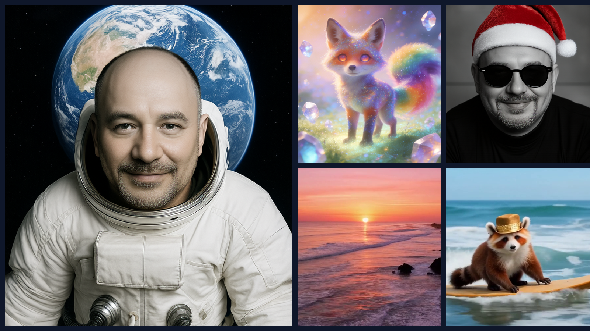
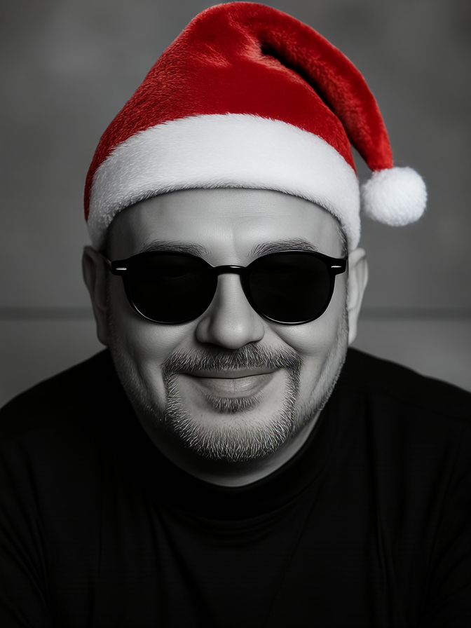
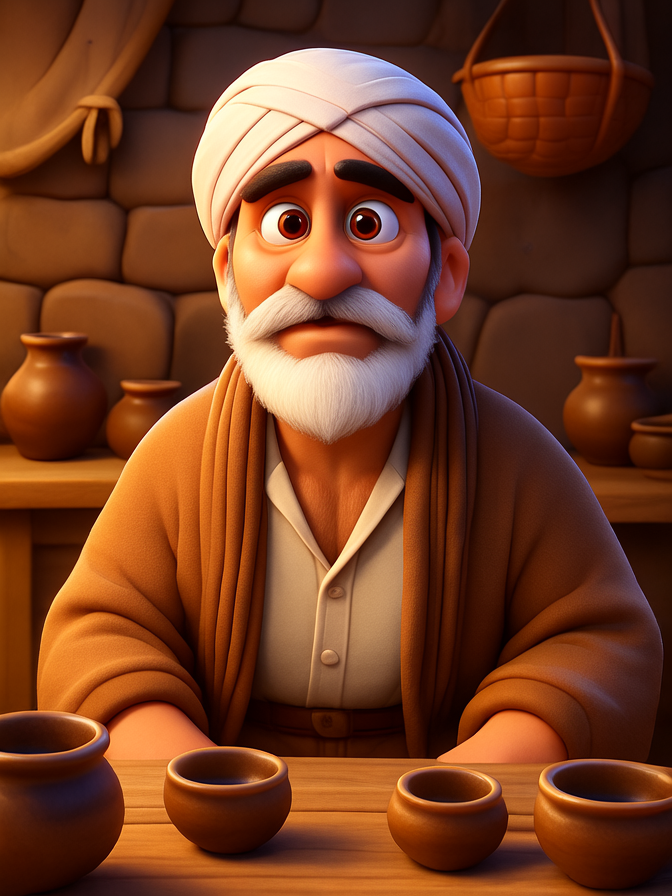
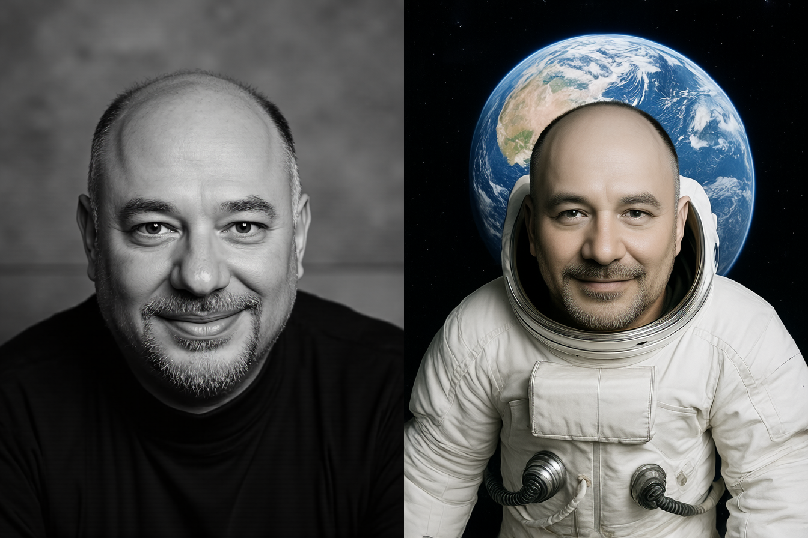
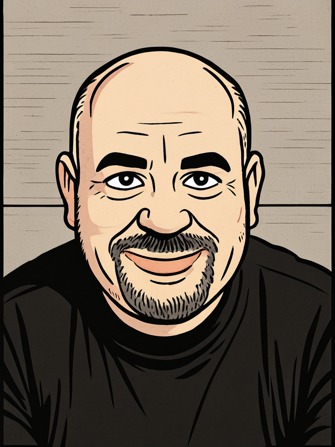
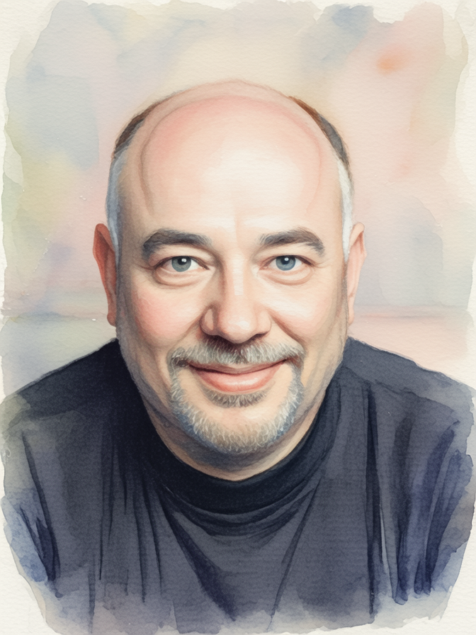
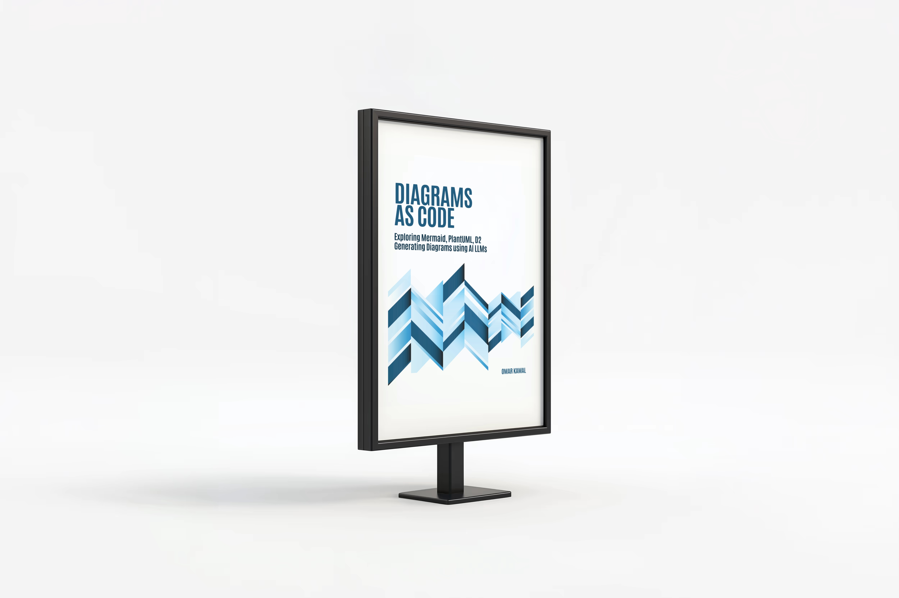
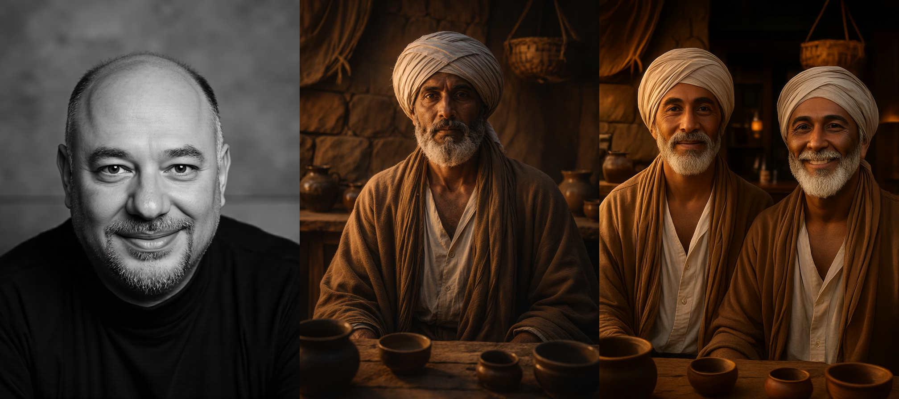
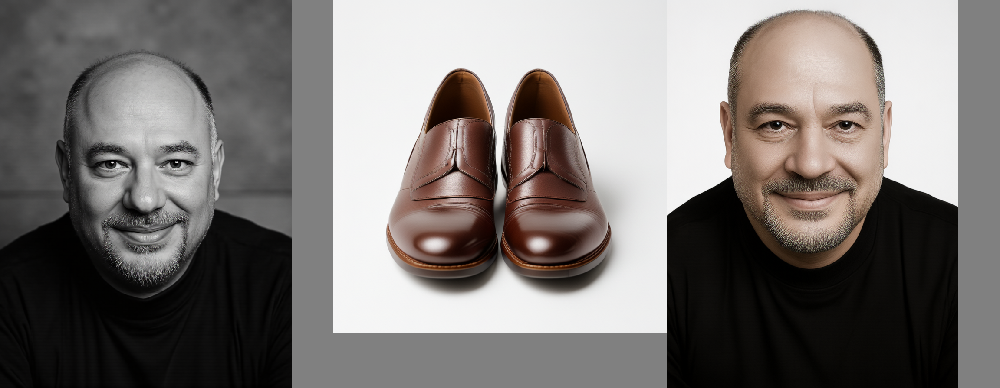
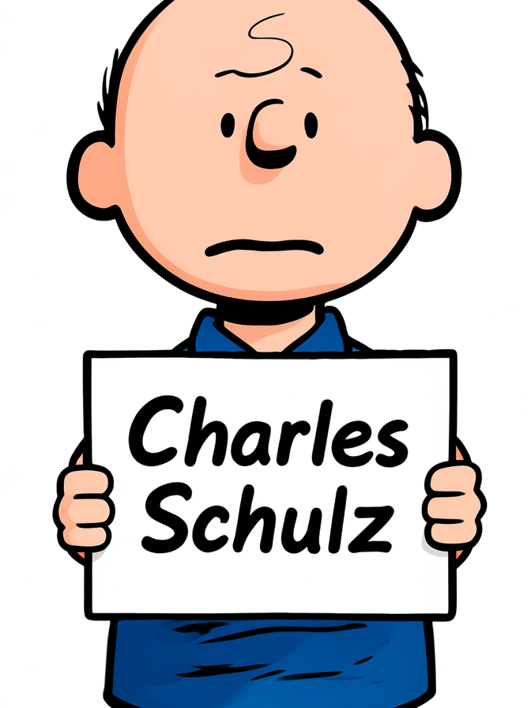

TL;DR
Lance packs image/video understanding, generation and editing into one 3B model and — despite its size — matches or beats much larger unified models: 0.90 GenEval, 84.67 DPG, 7.30 GEdit-Bench, 85.11 VBench.
On a single 24 GB 4090 it needs two small patches to fit (a bf16-before-GPU load order and a flash-attn rotary fix). After that: text-to-image ~10 s/image, and full 10.08 s text-to-video at native 480p — t2v memory is flat at ~24 GB regardless of length. Understanding (VQA / OCR / captioning) is excellent and cheap.
The one real wall: multi-reference composition (combine two people, person + object, or a style-reference image) collapses to reproducing one input. Style transfer still works beautifully — just describe the style in text, not with a reference image.
What Lance is, in one paragraph
Lance
("Unified Multimodal Modeling by Multi-Task Synergy", ByteDance) is a 3 billion active-parameter
model that does six things most stacks need six models for: text→image, text→video,
image editing, video editing, and image / video understanding
(visual question answering and captioning). The transformer backbone is a Qwen2-derived
Mixture-of-Transformer with separate expert weights for "understanding" and "generation" tokens;
it is trained from scratch (only the ViT and VAE encoders are pretrained) on a 128×A100 budget. The two
visual front-ends are a Qwen2.5-VL ViT (for understanding/conditioning) and a
Wan 2.2 video VAE (for generation). Two checkpoints ship: Lance_3B for images and
Lance_3B_Video for video.
What makes it interesting for a home lab is the size. A 3B unified model that posts numbers next to 7B–20B systems is exactly the kind of thing that should run on a single consumer GPU — so I downloaded the weights to a data disk and pointed it at my RTX 4090. The rest of this article is what came out.
uv venv on Python 3.11; torch 2.5.1+cu124, flash-attn 2.8.3,
transformers 4.49, diffusers 0.29.1. All runs are bf16 with flash-attention and the
KV-cache path enabled.
Seven modes, one set of weights
The CLI dispatches on a --task flag. Six modes are documented; a seventh —
image_idip, subject-driven generation — lives in the code but isn't wired into the launcher, so I
registered it to test reference-conditioned generation properly. Here's the map before we look at outputs.
| Mode | Task flag | Input → Output | Checkpoint |
|---|---|---|---|
| Text → Image | t2i | prompt → image | Lance_3B |
| Image editing | image_edit | image + instruction → image | Lance_3B |
| Subject-driven | image_idip | reference image + prompt → image | Lance_3B |
| Image understanding | x2t_image | image + question → text | Lance_3B |
| Text → Video | t2v | prompt → video | Lance_3B_Video |
| Video editing | video_edit | video + instruction → video | Lance_3B_Video |
| Video understanding | x2t_video | video + question → text | Lance_3B_Video |
Image generation & editing
Text-to-image is the most polished mode. The model renders clean in-image text (the cat's "STOP" sign on the project page is real), holds long compositional prompts together, and runs in about 10 seconds per 768² image on the 4090.
Instruction-guided editing
image_edit takes a source image and a free-form instruction. It preserves identity and pose while
applying local edits (objects, relighting) or a whole-image restyle. Two examples — adding accessories to my own
portrait, and a full 3D-cartoon restyle of a friend's photo:



Subject-driven generation
Give Lance a single reference photo of a subject and a prompt, and it generates a new scene that keeps the
subject's identity. This is the image_idip path (identity-preserving), and with one
reference it works really well. Outputs are saved as a [reference | generated] pair:

Style transfer — describe it, don't reference it
Style transfer is just image_edit with the target style described in text. That is
the "free-form manipulation" the project page shows, and it is excellent — the subject stays recognizable while
the medium changes completely:


Image & video understanding
The understanding modes (x2t_image, x2t_video) take a visual plus a question and emit
text. They're fast (~3 s per image) and accurate — including OCR and symbol recognition. A few real answers,
verbatim:
① Symbol & scene recognition
x2t_imageQ · what are the people doing, and what flag? "The people in the image are soldiers, and they are raising an Egyptian flag atop a destroyed building."
② OCR — reading a poster
x2t_image
Q · read the text and describe the image "…a poster that reads \"DIAGRAMS AS CODE\" in large blue letters. The design is simple yet striking…"
③ Video captioning — a film scene
x2t_videoQ · describe the people, clothing and setting "…an elderly man with a white beard and white headwrap… sitting in a room with a solemn expression… a white tunic with a high collar. The room has a wooden door and a window with white curtains… deep in thought or concerned about something."
Video — generation & editing
Text-to-video runs from the Lance_3B_Video checkpoint at 848×480, 12 fps. Quality is strong and
motion is coherent. Two clips — a tropical sunset coastline and a red-panda surfer:
Video editing
video_edit recolors subjects and replaces backgrounds while keeping motion. It is the most
memory-hungry mode (it holds the reference video and the generated target at once), so on 24 GB it runs
at video_360p on short clips. Input → edited:
The official benchmarks — punching above 3B
The reason a 3B unified model is worth your disk space is the score-to-size ratio. From the Lance paper, here is where it lands against larger unified models on the four headline suites (Lance highlighted):
| Model | Params | GenEval ↑ | DPG ↑ | GEdit-Bench ↑ | VBench ↑ |
|---|---|---|---|---|---|
| BAGEL | 7B | 0.88 | 85.07 | 6.52 | — |
| Show-o2 | 7B | 0.76 | 86.14 | — | 81.34 |
| InternVL-U | 1.7B | 0.85 | 85.18 | 6.66 | — |
| TUNA | 7B / 1.5B | 0.90 | 86.76 | — | 84.06 |
| Qwen-Image | 20B | 0.87 | 88.32 | — | — |
| Wan2.1-T2V | 14B | — | — | — | 83.69 |
| 🌟 Lance | 3B | 0.90 | 84.67 | 7.30 | 85.11 |
The standout is image editing: 7.30 on GEdit-Bench beats BAGEL (6.52) and InternVL-U (6.66) by a clear margin, and video generation at 85.11 VBench edges out the 14B Wan2.1-T2V. On GenEval it ties the 7B TUNA at 0.90 and beats the 20B Qwen-Image. DPG (84.67) is the one suite where the bigger models keep a small lead.
Running it on a 24 GB 4090 — two fixes
The README asks for a 40 GB GPU. The 4090 has 24. It fits, but only after two changes — both worth knowing if you try this yourself.
① Load in bf16 before moving to the GPU
The image checkpoint is 6.19 B parameters stored in fp32 (~24 GB). The stock loader moves the fp32 model to the GPU and only then casts to bf16 — which OOMs a 24 GB card at load time. Casting on CPU first, then moving the ~12 GB bf16 model to the GPU, fixes it:
# inference_lance.py — cast on CPU, defer the GPU move
model = model.to(dtype=torch.bfloat16) # was: model.to(DEVICE) [fp32 -> OOM]
# ... load checkpoint, resize embeddings ...
model = model.to(device=DEVICE, dtype=torch.bfloat16) # GPU holds bf16 only② Swap the flash-attn rotary kernel
flash-attn 2.8.3's Triton apply_rotary_emb calls torch.library.wrap_triton, which only
exists in torch ≥ 2.6 (this repo pins 2.5.1). Any ViT pass — every edit, every understanding call — crashes with
AttributeError. The pure-torch variant has identical math and is a drop-in; the fast attention
kernel is untouched:
# modeling/vit/qwen2_5_vl_vit.py
from flash_attn.layers.rotary import apply_rotary_emb_torch as apply_rotary_emb
With those in place, plus PYTORCH_CUDA_ALLOC_CONF=expandable_segments:True to keep video
generation from fragmenting, everything runs.
Performance — every mode, measured
All seven modes, run back-to-back on the 4090. "Load" is checkpoint load + bf16 cast + GPU move; "Gen" is the denoise/decode (or autoregressive decode for understanding). Peak VRAM is the max sampled during the run.
| Mode | Checkpoint | Load (s) | Gen (s) | Per example | Peak VRAM |
|---|---|---|---|---|---|
| t2i | Lance_3B | 42 | 20 | 10.0 s | 16.3 GB |
| image_edit | Lance_3B | 67 | 25 | 12.5 s | 16.6 GB |
| image_idip | Lance_3B | 43 | 57 | 14.2 s | 20.0 GB |
| x2t_image | Lance_3B | 41 | 13 | 3.2 s | 16.2 GB |
| t2v (33f) | Lance_3B_Video | 114 | 155 | 77.5 s | 24.0 GB |
| x2t_video | Lance_3B_Video | 102 | 77 | 38.5 s | 21.7 GB |
| video_edit | Lance_3B_Video | 102 | 11 | 5.5 s | 17.4 GB |
Reading the table
Image modes are comfortable (16–20 GB) and fast (3–14 s each). The video model loads slower (the checkpoint is larger) and t2v is the only mode that pushes the 24 GB ceiling. Model load dominates short jobs — keep the process warm if you're generating in bulk.
What the shape says
t2v is the lone outlier — it is the only mode that reaches both rims at once
(~98 % of VRAM and 100 % of the time axis). The four image modes collapse into a small
inner cluster (66–81 % VRAM, under 19 % time): cheap and interactive. x2t_image
is the fastest point on the whole chart at 3.2 s/image (4 % of the time axis),
while x2t_video is the second memory peak (88 %) at mid-speed. The geometry makes the
operational rule visual: everything on the image checkpoint is real-time-ish; only video generation
is a "launch it and walk away" job.
Maximum video duration on 24 GB
Output is hard-coded to 12 fps and the model caps at 121 frames, so the absolute ceiling is 10.08 s. The surprise: t2v memory is flat at ~24 GB regardless of frame count — flash-attention keeps the long-sequence denoise cheap and the Wan VAE decodes frame-by-frame — so the full 121 frames fit even at native 480p. I swept it to confirm:
| Resolution | Frames | Duration | Peak VRAM (MiB) | Result |
|---|---|---|---|---|
| 848×480 | 57 | 4.75 s | 23960 | OK |
| 848×480 | 73 | 6.08 s | 24035 | OK |
| 848×480 | 97 | 8.08 s | 23991 | OK |
| 848×480 | 121 | 10.08 s | 24043 | OK · max |
| 640×384 | 121 | 10.08 s | 21793 | OK |
| 512×288 | 121 | 10.08 s | 19445 | OK |
frame_condition_idx, an ff2v "first-frame→video" prompt) exist but aren't wired to
any task. The closest routable capability is video_idip (image-reference → video), which shares the
same 10.08 s ceiling. True first-frame i2v would need the conditioning path wired up.
Reading the two polygons
The red (VRAM) polygon is almost a flat arc across the four 480p axes — 97.5 %, 97.8 %, 97.7 %, 97.9 % at 57→121 frames — so memory barely moves as the clip lengthens. The green (duration) polygon expands from 47 % to 100 % over those same axes: more seconds for the same memory. Only the last two axes (384p, 288p) pull the red polygon inward, and the green stays pinned at 100 % — proof that dropping resolution buys headroom you don't need, since native 480p already hits the 10.08 s frame cap.
Where it breaks: multi-reference composition
The one capability that consistently fails is composing two reference images into one output — whether that's two people, a person plus an object, or a content image plus a style image. The model anchors on one reference and reproduces or blends toward it. Three attempts, all on the correct subject-driven path:



The cause is mechanical: the position-id logic shifts all reference tokens to the same coordinate offset, so multiple references overlap in position space and the model can't keep them distinct. It is not a prompt problem and not a bug I introduced — multi-reference composition simply isn't a trained, exposed capability of the released 3B weights (the docs advertise only single-input tasks). The practical rule: one image reference for subject-driven generation; text instructions for style and edits.
References
- GitHub —
bytedance/Lance— code, inference scripts and the README benchmark tables. - Hugging Face —
bytedance-research/Lance— theLance_3BandLance_3B_Videoweights, ViT and Wan VAE. - Project page — visual galleries for editing, video and understanding.
- arXiv 2605.18678 — "Lance: Unified Multimodal Modeling by Multi-Task Synergy".
- Acknowledged components: Qwen2.5-VL (ViT), Wan 2.2 (video VAE), BAGEL.
Note on video understanding
The descriptions are accurate on people, attire, setting and mood — but the model does not name proper nouns (it describes the scene, not "Omar Mukhtar"). On 24 GB this mode needs short clips at a reduced ViT resolution: a ~10 s clip at 480p tries to allocate a 33 GB attention mask and OOMs, so I cap at ~3 s and
video_360p.